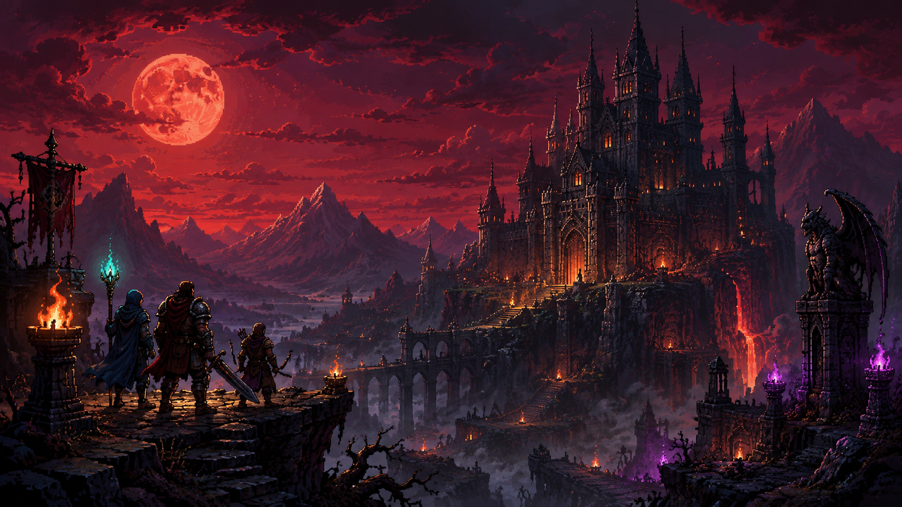
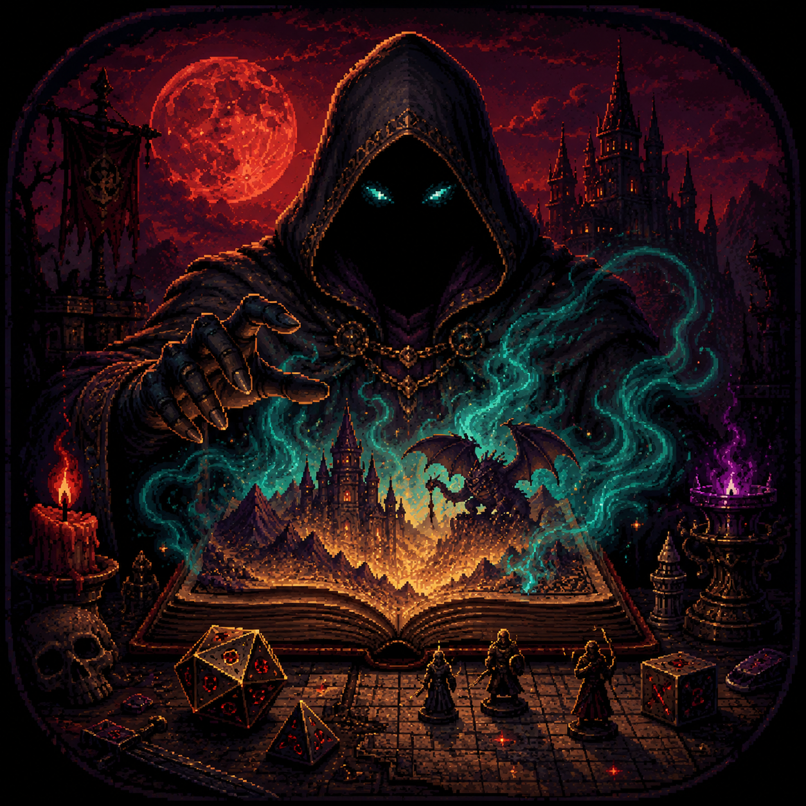
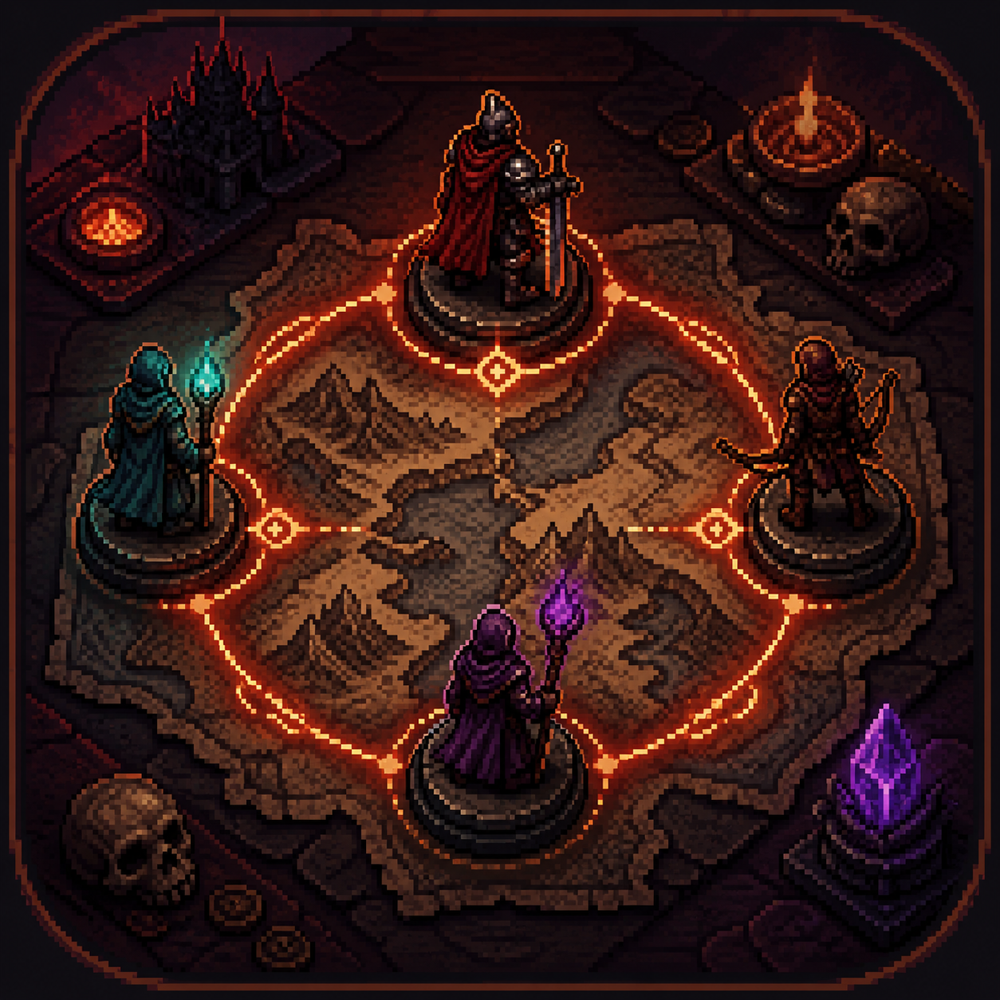
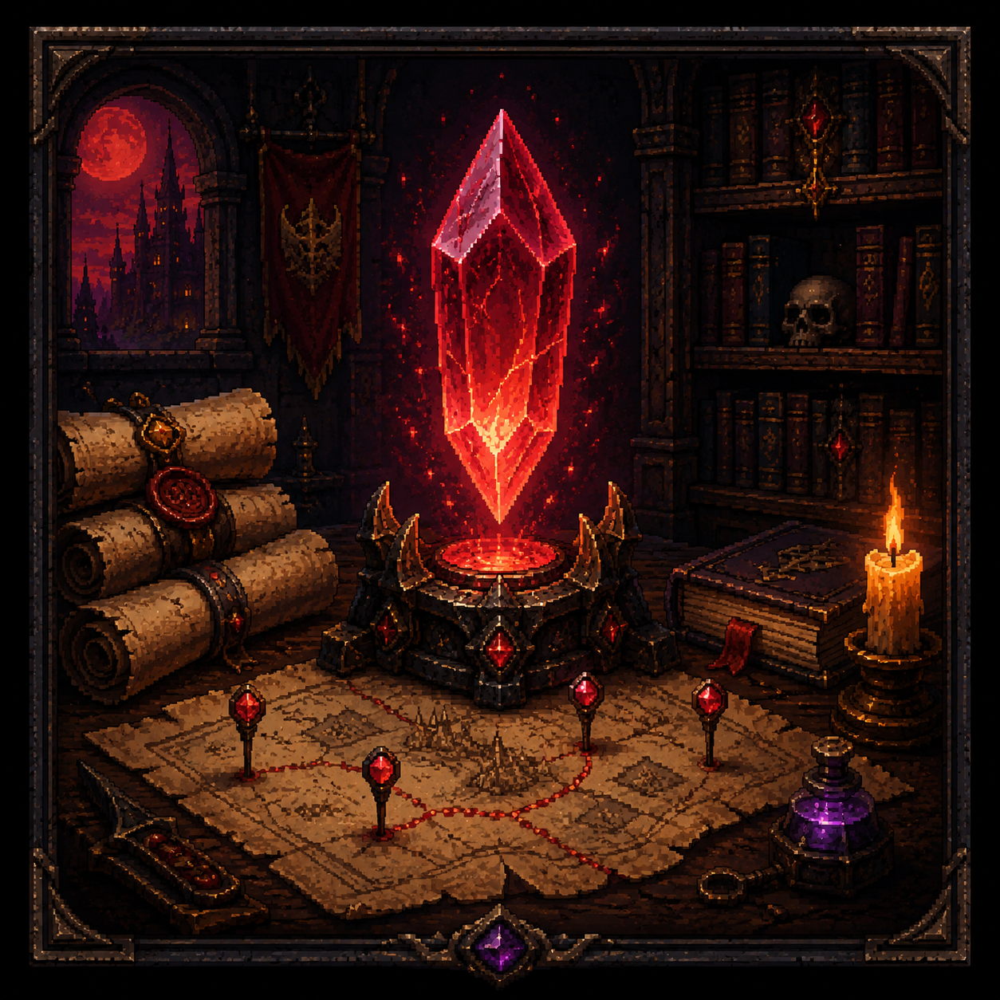

Solo Delve
Start a one-player campaign with AI companions, persistent memory, and a Dungeon Master that keeps the story moving.
Closed test in progress
A mobile-first pixel-fantasy adventure where a living AI Dungeon Master turns party choices into chambers, omens, bargains, battles, and consequences that carry between sessions.
Checking the closed-test gateway...
Android first Private backend Public preview
Start a one-player campaign with AI companions, persistent memory, and a Dungeon Master that keeps the story moving.
Create a passkey, gather a small crew, ready up, and resolve submitted actions as one coordinated table.
Queue into public adventures built for quick sessions, stranger parties, and automatic turn pacing.
World locations
Work in progress
Pocket Dungeon is being hardened for testers before it is sold publicly. The site is public so partners and testers can find the project; the game code, campaign logic, provider keys, and Android pipeline remain in the private application repository.
Hosted on GitHub Pages at getpocketdungeon.com with only static, shareable marketing assets.
The API stays behind api.getpocketdungeon.com. Visitors see a safe status check here instead of raw backend output.
Tester builds connect to the private gateway for campaigns, turns, dice, memory, and audio readiness events.
The concept
The app is designed around short mobile sessions: pick a mode, submit an action, roll when the Dungeon Master calls for it, then watch the party state change. The private backend handles model routing, campaign state, dice, audio, memory, multiplayer turns, and moderation hints behind api.getpocketdungeon.com.

AI Dungeon Master Structured narration, choices, tool calls, and safety-aware redirects.
Multiplayer Turns Serialized party actions, timeouts, host transfer, and inactive-player handling.
Persistent Campaigns SQLite state plus vector memory for the beats that should matter later.